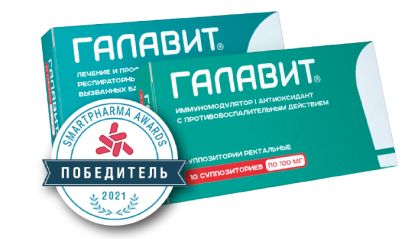

Галавит®
Препарат для комплексного лечения и профилактики вирусной инфекции

- регулирует активность клеток врожденного и адаптивного иммунитета
- нормализует фагоцитарную активность моноцитов/макрофагов, бактерицидную активность нейтрофилов и цитотоксическую активность NK-клеток
- повышает устойчивость организма к инфекционным заболеваниям бактериальной, вирусной и грибковой этиологии
- способствует более быстрой элиминации возбудителя из организма
- опосредованно регулирует выработку эндогенных интерферонов (ИФН-α, ИФН-γ)
- ингибирует избыточный синтез провоспалительных цитокинов, снижает выработку активных форм кислорода гиперактивированными макрофагами
- уменьшает уровень оксидативного стресса, защищает ткани и органы от воздействия свободных радикалов